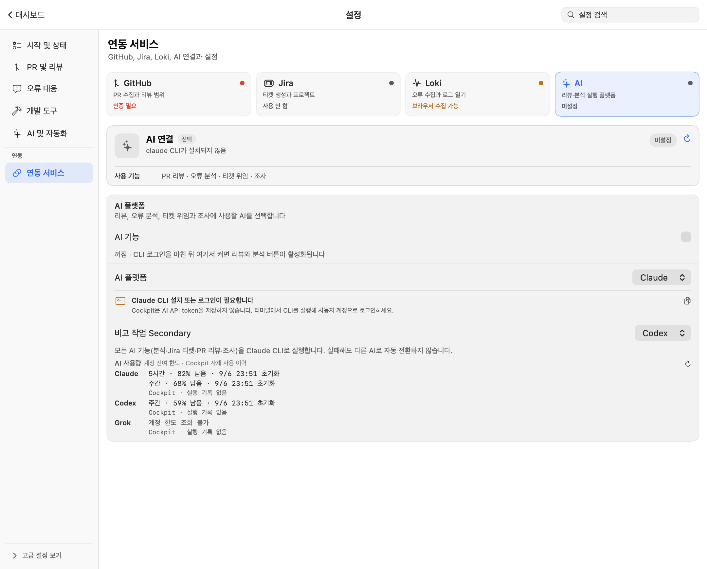
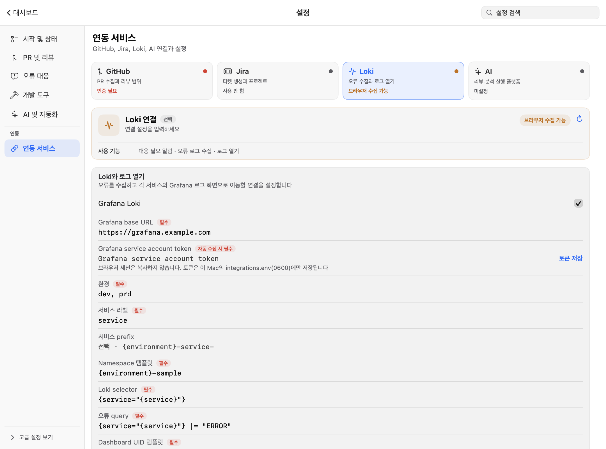
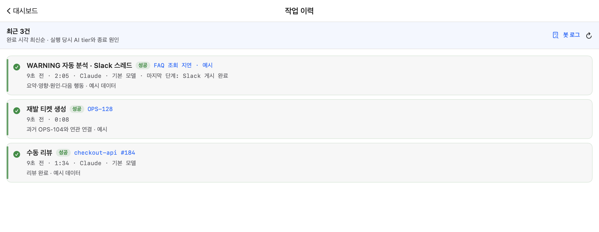
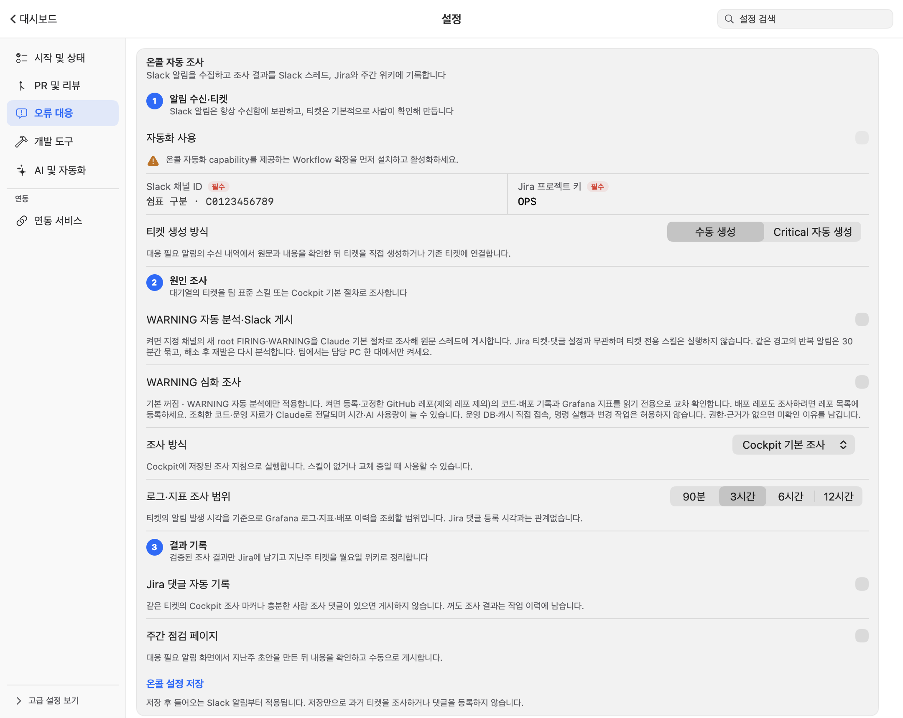
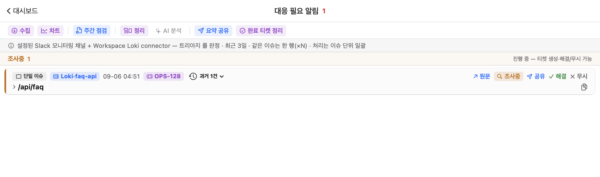

첫 실행은 연결보다 진단부터
설치가 끝났다면 모든 연동을 한 번에 채우지 않아도 됩니다. GitHub로 기본 화면을 먼저 만들고 필요한 기능만 확장하세요.
- 1
GitHub 인증을 확인합니다
gh auth status가 현재 사용할 host와 계정을 보여줘야 합니다. GitHub는 PR 대시보드의 유일한 필수 연동입니다. - 2
모니터링 저장소를 등록합니다
직접 볼 저장소를 추가합니다. 등록 범위 밖이어도 내가 만든 open·Draft PR은 ‘내 PR’에 계속 나타납니다.
- 3
연동 진단에서 실제 성공을 확인합니다
설정값 존재가 아니라 마지막 성공 시각과 오류를 기준으로 판단합니다. 선택 연동이 비어 있는 것은 오류가 아닙니다.
- 4
자동화는 마지막에 켭니다
AI 플랫폼, 리뷰 범위와 모드를 확인한 다음 자동 리뷰를 켜세요. 새 설치는 자동 실행이 꺼진 안전한 상태에서 시작합니다.
제품 소개 페이지의 설치 절차에서 marketplace 등록, doctor, update와 uninstall 명령을 확인할 수 있습니다.
설정은 두 가지 관점으로 봅니다
‘무슨 일을 할 것인가’와 ‘어떤 서비스에 연결할 것인가’를 분리했습니다. 같은 값을 여러 화면에 중복 입력하지 않습니다.
업무별 설정
PR 및 리뷰, 오류 대응, 개발 도구, AI 및 자동화처럼 사용 목적에서 시작합니다.
- 어떤 기능이 켜지는지 확인
- 모드와 동작 정책 선택
- 필요한 서비스 설정으로 이동
서비스별 설정
GitHub·Jira·Loki·AI는 연동 서비스에서, Slack은 오류 대응 설정에서 연결값과 상태를 확인합니다.
- 필수값과 선택값 구분
- 마지막 성공·오류 확인
- 다중 조직·팀·프로젝트 범위 관리
Workspace 범위를 비워두면
조직·팀 자동 발견은 실행하지 않고 직접 등록한 저장소만 정기 폴링합니다. 내 PR은 저장소 범위와 무관하게 표시되며, 범위 밖 리뷰 요청은 ‘내 리뷰 요청 전체’를 명시적으로 켠 경우에만 합쳐집니다.
organization, team, 고정 저장소와 Jira 프로젝트는 여러 개를 등록할 수 있습니다. 예시 이름은 입력 형식을 설명하는 플레이스홀더이며 실제 범위로 저장되지 않습니다.
인증은 각자, 설정은 필요한 만큼
다른 사람의 PC에서 동작하던 인증은 새 Mac에 자동으로 옮겨지지 않습니다. 토큰을 복사하는 대신 본인 계정과 권한으로 연결하세요.
GitHub와 PR 소유권
gh auth status에서 사용할 host·계정을 확인합니다.- 설정 → 연동 서비스 → GitHub에서 조직·팀·직접 저장소·고정 저장소를 등록합니다.
- ‘내 PR’은 현재 로그인한 작성자 기준,
auto-mine은 본인 또는 소속 팀의 리뷰 요청 기준입니다. - 범위 밖 리뷰 요청도 보려면 ‘내 리뷰 요청 전체’를 명시적으로 켭니다. 제외 저장소는 자동 조회·리뷰 범위에서 차단됩니다.
AI: Cockpit 토큰 입력 대신 CLI 로그인
선택한 Claude·Codex·Grok CLI를 이 Mac에 설치하고 각 CLI의 로그인 절차를 완료하세요. Cockpit은 AI API 토큰을 저장하지 않습니다. 플랫폼을 선택한 뒤 AI 연결과 전역 실행 스위치를 확인합니다.
일반 AI 작업은 선택한 플랫폼을 사용하며 실패해도 다른 AI로 조용히 바꾸지 않습니다. WARNING 자동 조사는 현재 Claude가 별도로 필요합니다.

Loki: Grafana 주소와 서비스 계정 토큰
- 조직에서 허용한 Grafana 주소와 로그 조회 범위를 설정합니다.
- 읽기 권한이 있는 Grafana 서비스 계정 토큰을 입력하고 저장합니다.
- 토큰은 이 Mac의 비밀값 파일에 소유자 전용 권한으로 저장됩니다. 프로필 JSON이나 공개 문서에 넣지 마세요.
- ‘다시 확인’에서 연결 상태와 마지막 수집 성공 시각을 확인합니다.
토큰이 없을 때 브라우저 로그인을 이용한 수집 경로가 제공될 수 있습니다. AI 조사의 Grafana 읽기 연결까지 준비됐다는 뜻은 아닙니다.

Slack: 게시 권한과 사용자 매핑을 따로 확인
설정 → 오류 대응의 Slack 연결에서 Bot/App 연결값과 감시 채널을 확인합니다. 메시지가 게시돼도 GitHub 작성자와 Slack 사용자의 매핑이 없으면 멘션은 실패할 수 있습니다.
- Bot이 해당 채널에 참여했고 필요한 게시 권한이 있는지 확인합니다.
- GitHub login이 해당 Workspace의 올바른 Slack member ID로 연결돼야 합니다. 표시 이름만 같다고 동일 사용자로 판단하지 않습니다.
- 지원하는 조직 Workflow 확장은 공통 사용자 디렉터리를 제공할 수 있습니다. 개인 매핑과 확장 설치 여부도 함께 확인하세요.
설치된 조직 Workflow가 온콜 자동화 기능을 제공해야 합니다. 그다음 Slack 채널·Jira 프로젝트·조사 방식을 설정하세요. 토큰과 개인 로그인은 확장이 대신 배포하지 않습니다.
‘오늘 사용 없음’과 ‘한도 없음’은 다릅니다
설정 → 연동 서비스 → AI에서 계정 잔여 한도와 Cockpit 실행 기록을 분리해 읽으세요.
계정 잔여 한도
제공자가 보고한 한도 창과 초기화 시각입니다. 오늘 Cockpit을 실행하지 않았어도 조회 가능하면 표시됩니다. 다른 클라이언트에서 사용한 양도 계정 한도에 영향을 줄 수 있습니다.
Cockpit 사용 기록
이 앱에서 실행한 작업 수와 기록된 토큰·환산 비용입니다. 계정 전체의 남은 한도를 뜻하지 않습니다.
인증·조회 경로 문제나 만료된 자료로 한도를 확인할 수 없으면 조회 불가로 표시합니다. 새로고침 후 조회 상태와 초기화 시각을 확인하세요.
PR 상태와 실행 작업을 같은 시야에
왼쪽은 판단할 PR, 오른쪽은 지금 움직이는 작업입니다. 메뉴 막대 패널과 큰 창은 같은 상태를 공유합니다.
리뷰 모드, 누적 결과, 오늘 사용량과 연동 상태
BLOCK, 머지 가능, 리뷰 미지정, CI 실패, Draft
내가 리뷰어, 내 PR, 승인됨, 그 외 리뷰
진행 단계, 경과시간, 모델, 정체와 결정적 오류
PR 행에서 읽는 신호
재리뷰는 이전 리뷰 뒤 코드가 바뀌었거나 새 리뷰 요청이 왔다는 뜻입니다.CI×는 체크 실패,CI…는 아직 진행 중임을 뜻합니다.BLOCK은 AI 판정 기록이며 GitHub의 REQUEST_CHANGES를 자동 제출했다는 뜻이 아닙니다.- 행을 열면 본문, 변경 맥락, 리뷰 결과와 대화 처리 도구를 확인할 수 있습니다.
자동화 범위를 먼저 고르고 리뷰합니다
수동 리뷰와 자동 리뷰는 같은 분석 파이프라인을 사용하지만 시작 조건이 다릅니다.
앱에서 실행하거나 명시적으로 요청한 PR만 리뷰합니다.
현재 GitHub 계정이나 소속 팀이 리뷰어로 지정된 PR만 자동 리뷰합니다.
설정한 Workspace 범위의 새 PR·새 커밋을 자동 리뷰합니다.
재리뷰는 언제 실행되나요?
이전 리뷰 이력이 있어도 head SHA가 달라졌거나 같은 head에서 리뷰가 다시 요청되면 새 작업으로 봅니다. 실패·시간 초과는 자동 재실행하지 않으며 작업 카드나 이력에서 사용자가 다시 실행합니다.
보완 필요 판정은 일반 코멘트로 남기고 승인을 보류합니다. 자동으로 REQUEST_CHANGES를 제출하지 않습니다. 승인은 분석 통과와 CI 조건을 모두 만족할 때만 수행합니다.
사전 리뷰와 게시형 리뷰
Draft나 본인 PR은 사전 리뷰로 결과를 먼저 확인할 수 있습니다. 게시형 리뷰는 worker가 GitHub 반영과 종료 결과까지 소유하며, 앱을 닫아도 계속됩니다.
작업 카드는 상태가 아니라 설명입니다
리뷰, Jira, Slack, Loki, AI 분석, 지식 관리와 GitHub 작업이 같은 카드 규칙을 사용합니다.

알림 수신과 분석 완료는 별도 단계입니다
- 대응 필요의 Slack 알림: 수집·분류된 이슈와 티켓 연결을 확인하고 ‘원문’으로 Slack 메시지를 엽니다.
- 작업 이력 → WARNING 자동 분석 · Slack 스레드: 실행 결과·실패·보류 이유를 확인합니다.
- Slack 원문 스레드: 실제 게시된 분석을 확인합니다. 수신 시각만으로 게시 성공을 판단하지 않습니다.
주간 OPR은 온콜 티켓과 조사 댓글을 모아 초안을 만들고, 앱에서 확인한 뒤 위키에 게시하거나 기존 페이지를 갱신하는 별도 흐름입니다.
정체나 오류가 표시돼도 자동으로 재실행하지 않습니다. 현재 작업을 중단할지, 이력에서 다시 실행할지는 사용자가 선택합니다.
이벤트를 모으는 화면이 아니라 대응을 끝내는 화면
Slack과 Loki에서 들어온 로그를 같은 시그니처의 이슈로 묶고, 여러 이슈는 하나의 원인으로 정리합니다.
묶기와 자동 편입
같은 안정 오류 패턴은 기존 원인에 자동 편입됩니다. 신뢰도가 낮거나 여러 원인과 충돌하면 제안으로 남겨 사용자가 결정합니다. ‘빼기’는 해당 이슈만 원인 묶음에서 되돌립니다.
조사중으로 옮긴 뒤
행은 조사중 섹션에 남고 티켓, 공유, 해결과 무시 액션을 계속 사용할 수 있습니다. AI 분석은 현재 미처리 항목만 입력으로 사용하며, 정리 후 다시 실행하면 최신 원인 구조를 반영합니다.
목록·차트·다음 AI 입력에서 제외
Done 이후 재발로 유지
완료 티켓 정리
- 현재 화면에 연결된 Jira 티켓만 조회합니다.
- Done 시각을 받은 티켓과 제외할 로그를 미리 보여줍니다.
- 정리 후 신규 제외·누적 제외·재발 수를 즉시 표시합니다.
- 완료 시각이 없는 티켓은 안전하게 건너뛰고 키를 알려줍니다.
대부분 정리 실패가 아니라 완료 이후 같은 오류가 다시 발생한 경우입니다. 행의 ‘Done 이후 재발’ 칩과 최근 발생 시각을 확인하세요.
해결과 무시
해결은 유효한 대응 완료, 무시는 노이즈·해당 없음 기록입니다. 둘 다 현재 이벤트를 종결하지만 새 이벤트가 들어오면 다시 판단할 수 있습니다. 완료 티켓 cutoff는 과거 로그의 재수집까지 막는 별도 기준입니다.
WARNING을 조사해 원문 스레드에 기록하기
Jira 티켓을 만들지 않고 경고를 분석해 Slack 원문 스레드에 결과를 게시하는 별도 기능입니다.
- 1
먼저 연결과 범위를 확인합니다
온콜 Workflow 확장, 자동화 사용, 감시 채널, Claude 로그인과 AI 실행, Grafana/Loki 읽기 연결, Slack 게시 권한이 필요합니다.
- 2
‘WARNING 자동 분석·Slack 게시’를 켭니다
이후 수신되는 새 root FIRING·WARNING이 대상입니다. 과거 수신함, 스레드 답글, RESOLVED 알림은 조사를 시작하지 않습니다. Jira 댓글 설정이나 티켓 전용 스킬과 별개입니다.
- 3
원문 스레드와 작업 이력에서 확인합니다
16세도 이해할 수 있는 설명으로 요약 → 영향 → 원인 → 다음 행동 → 미확인 사항을 표시합니다. 기술 근거는 아래로 분리하고 PromQL/LogQL은 코드 영역에 둡니다.
중복 방지는 로컬 PC 기준입니다. 반복 경고는 채널·Workspace별 30분간 묶고 해소 후 재발은 다시 조사하지만, 여러 PC의 게시를 서로 막아 주지는 않습니다.
Slack 전송 결과가 불확실하면 자동 재게시하지 않고 보류합니다. 전역 AI 중지, Workspace 변경, 설정 해제도 조사·게시 전에 다시 확인합니다.
심화 조사는 더 넓게 확인하되, 모르는 것은 남깁니다
‘WARNING 자동 분석·Slack 게시’를 사용하는 경우 ‘WARNING 심화 조사’를 별도로 선택할 수 있습니다.

추가로 확인하는 근거
- 등록·고정한 GitHub 저장소의 코드 검색과 고정 커밋 파일
- GitHub 배포 기록과 상태, 등록된 배포 저장소의 선언
- 권한이 있는 Grafana 지표·로그와 관련 서비스 영향
제공하지 않는 접근
- 미등록·제외 저장소 또는 조직 전체의 무제한 검색
- 운영 DB·캐시 직접 접속
- 로컬 파일·셸·임의 HTTP와 운영 변경 명령
배포 매니페스트도 조사하려면 해당 저장소를 등록해야 합니다. 소스·모델 파일은 DB 설계의 근거일 뿐 실제 데이터 상태가 아니며, 기본 브랜치·GitHub 배포 기록·GitOps 선언만으로 실제 운영 커밋을 단정하지 않습니다.
조사 시간과 AI 사용량이 늘 수 있습니다. 팀의 데이터 정책과 읽기 권한을 확인한 뒤 켜세요. GitHub 조회는 40회·15분, 개별 요청은 15초, 전체 WARNING 실행은 20분으로 제한됩니다.
코드·배포·캐시·검색 서버·영향 확산을 확인/미확인/접근 불가/미수행으로 구분합니다. 경보가 해소됐다는 사실을 전체 서비스 정상 응답으로 해석하지 않습니다. 조사 중 설정이나 범위를 변경하면 추가 조회를 중단하거나 게시를 보류할 수 있습니다.
재발은 새 티켓으로 이어갈 수 있습니다
완료된 티켓을 새 장애의 현재 티켓처럼 계속 사용하지 않아도 됩니다.
- 대응 필요에서 최근 발생 시각과 ‘Done 이후 재발’ 표시를 확인합니다.
- 재발 이슈의 티켓 작업에서 새 티켓 생성을 선택합니다.
- 기존 티켓을 과거 이력으로 보존하고 새 티켓을 현재 연결로 둡니다.
- 새 티켓에 과거 티켓을
Relates연관 관계로 연결합니다. 생성·연결 결과도 확인하세요.

‘완료 티켓 정리’는 원문 로그를 삭제하는 기능이 아닙니다. 완료 시각 이전 발생분을 목록·차트·다음 AI 입력에서 제외하고, 이후 발생분은 재발로 남깁니다.
도구마다 AI 사용 여부가 다릅니다
버튼의 ✦ 표식과 실행 카드의 ‘비AI·AI·혼합’ 표시를 보고 비용과 권한 범위를 판단할 수 있습니다.
서비스, 환경과 옵션을 고르고 JDK·인증·로컬 인프라 사전 검증 후 실행합니다.
서비스·환경·기간·검색 프리셋으로 Workspace에 연결된 로그 화면을 엽니다.
설정된 코드 검색 connector로 여러 저장소를 읽기 전용 검색합니다.
지원 Workspace에서만 노출되며, 실행 전 대상과 시나리오를 다시 확인합니다.
계획은 확인 가능한 형태로 만들고 외부 배포 실행은 사용자의 명시적 선택으로 시작합니다.
원문 증거를 읽어 조사 보고서를 만들며 외부 쓰기 작업은 별도 단계로 분리합니다.
worker가 소유한 작업은 앱을 닫아도 이어집니다
앱은 요청을 만들고 상태를 보여줍니다. worker는 복구 가능한 큐에서 게시형 리뷰와 자동화의 실행·GitHub 반영·종료 결과를 소유합니다.
앱이 소유
- 화면 상태와 사용자 입력
- 설정·연동 진단
- 대응 알림 정리·연결
- 비차단 확인 선반
worker가 소유
- 자동·게시형 PR 리뷰
- 작업 큐와 재시작 복구
- CI 대기와 승인 게이트
- 선택한 Slack·Loki 폴링
Workspace, PR head SHA와 리뷰 요청 신호를 함께 기록합니다. 같은 요청의 반복 폴링은 건너뛰고 코드 변경이나 새 재리뷰 요청만 새 작업으로 처리합니다.
로컬 보관과 외부 전달을 구분합니다
- 이 공개 안내 사이트는 앱의 설정·계정·PR·로그를 수집하지 않습니다.
- 앱의 설정·상태·비밀값은 각 Mac에서 관리합니다. AI 실행 시 필요한 코드·로그는 해당 AI 서비스로 전달될 수 있습니다.
- ‘읽기 전용 조사’는 운영 시스템을 변경하지 않는다는 뜻입니다. WARNING 자동 게시를 켜면 조사 결과는 Slack에 쓰입니다.
- 일반 리뷰 게시, Jira 생성·댓글, 위키 게시도 각각의 실행·자동화 설정과 서비스 권한에 따릅니다.
- 업데이트는 통합 설치 경로를 사용합니다. 실행·대기 중 작업으로 막히면 작업 종료 후 다시 시도하고 강제로 우회하지 마세요.
문제는 설정값보다 마지막 성공에서 찾습니다
먼저 설정의 연동 진단과 작업 카드의 결정적 오류를 확인하세요.
AI가 연결되지 않고 토큰 입력 칸도 없습니다＋
각자 선택한 AI CLI에서 로그인한 다음 설정 → 연동 서비스 → AI의 연결과 실행 스위치를 확인하세요. WARNING 자동 조사는 별도로 Claude가 필요합니다. 첫 연결 안내
Loki에 ‘토큰 없음 · 브라우저 수집 가능’이 표시됩니다＋
API 연결 완료 상태가 아닙니다. 설정 → 연동 서비스 → Loki에서 읽기 권한이 있는 서비스 계정 토큰을 저장하고 재진단하세요. Loki 안내
Slack 글은 게시되는데 멘션이 안 됩니다＋
게시 권한과 사용자 매핑은 별개입니다. 현재 GitHub login에 연결된 Slack member ID, Workspace 매핑과 공통 디렉터리 확장을 확인하세요. 멘션 연결 안내
WARNING 분석 댓글이 보이지 않습니다＋
새 root FIRING·WARNING인지, 담당 PC에서 자동 게시가 켜져 있는지 확인하세요. 과거 수신함과 답글은 대상이 아닙니다. Claude·Grafana 읽기·Slack 게시 권한을 점검하고 작업 이력의 실패·보류 이유를 확인하세요. 시작 조건
오늘 앱을 쓰지 않아 잔여 한도가 안 보입니다＋
오늘 실행 수와 계정 한도는 별개입니다. 계정 한도 조회 상태와 초기화 시각을 확인하세요. 조회 불가는 0% 소진이 아닙니다. 사용량 안내
PR 목록이 비어 있습니다＋
GitHub 인증과 모니터링 저장소를 확인하세요. 조직·팀 범위를 비웠다면 직접 등록한 저장소만 정기 폴링합니다.
내 PR 또는 리뷰 요청이 보이지 않습니다＋
현재 gh 로그인 계정이 PR 작성자·리뷰어와 일치하는지 확인하세요. 범위 밖 리뷰 요청은 설정에서 ‘내 리뷰 요청 전체’를 켜야 합니다.
자동 리뷰가 시작되지 않습니다＋
AI 연동, 전역 AI 실행 스위치, 리뷰 모드와 Workspace 범위를 순서대로 확인하세요. manual 모드는 자동 리뷰를 실행하지 않습니다.
작업 카드가 정체 상태입니다＋
진행 신호가 늦은 것인지 결정적 오류가 있는지 먼저 구분하세요. 실패·시간 초과 작업은 자동 재실행되지 않으므로 원인을 해결한 뒤 수동으로 다시 실행합니다.
Loki 또는 Slack 알림이 들어오지 않습니다＋
해당 서비스 연결, 감시 대상과 마지막 heartbeat를 확인하세요. 선택 연동이 비어 있으면 관련 기능만 의도적으로 비활성화됩니다.
완료 티켓 정리 후 행이 남습니다＋
정리 결과의 재발 건수와 행의 ‘Done 이후 재발’ 칩을 확인하세요. 완료 시각 이후 로그는 새 장애 신호로 남습니다.
메뉴 막대에서 Cockpit이 보이지 않습니다＋
Spotlight에서 Cockpit을 다시 열면 큰 창으로 접근할 수 있습니다. 메뉴 막대 공간이 부족하면 macOS가 항목을 숨길 수 있습니다.
GitHub · AI · Jira · Loki · Slack의 마지막 성공과 오류를 한곳에서 확인합니다.
화면은 실제 UI, 데이터는 공개용 예시입니다
앱 1.34.22의 변경하지 않은 SwiftUI View를 격리된 테스트 창에서 렌더링해 내보냈습니다. HTML 모형이나 생성형 이미지가 아니며 설치된 실계정 앱의 화면 캡처도 아닙니다.
- 실제 PR·고객 정보·Slack ID·운영 로그·토큰을 복사하지 않았습니다.
- 샘플 데이터의 티켓·잔여 한도·작업 성공 표시는 기능 설명용이며 실제 실행 결과가 아닙니다.
- 별도 임시 설정 경로를 사용하고 렌더링 프로세스의 네트워크·하위 프로세스·실계정 민감 경로 읽기를 차단했습니다.
- 이미지에서 설정이 꺼져 있거나 확장 미설치로 보이는 것은 토큰·외부 연결을 주입하지 않은 예시 환경의 상태입니다.
문서 기준 1.34.22 · 갱신일 . 이후 앱 버전에서는 배치나 기능이 달라질 수 있습니다.